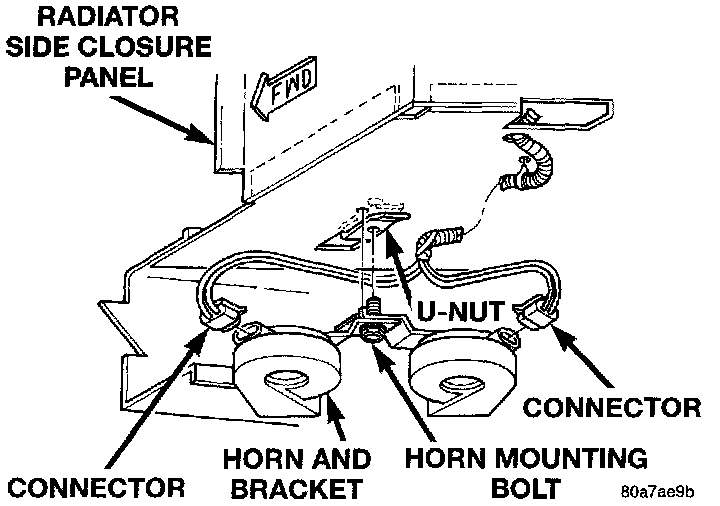

Horn: Service and Repair
REMOVAL1. Disconnect and isolate the battery negative cable.
2. Raise and support the vehicle.
3. Remove the radiator lower air deflector.
Horn Remove/Install:

4. Unplug the horn wire harness connectors.
5. Remove the bolt that secures the horn mounting bracket to the radiator closure extension panel and remove the horns.
6. Reverse the removal procedures to install. Tighten the horn mounting bracket bolt to 30 N.m (22 ft. lbs.).